子乗ってそれにも乗ってきました。山の中を走るバスも面白かったっす。
で、その関連？で、昔の能勢電の写真です。いつでも行けると思ってたら、阪急小型車時代の訪問は結局１回キリとなりました。なんと
も残念でなりません。３２０系に乗ったら蛍光灯ではなく白熱灯やった感動が忘れられない・・・
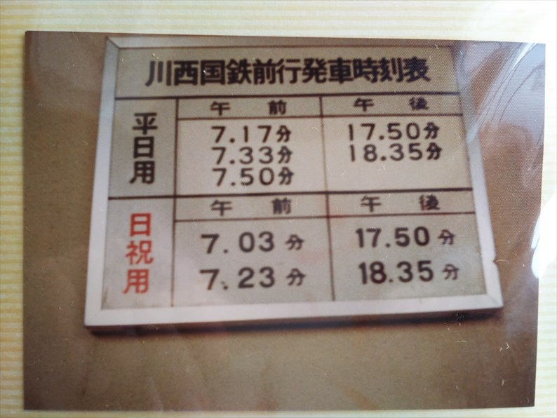
まずは、宝塚線沿線のこの時代の子供にはおなじみ
かつ謎だった国鉄前行きの電車です。
川西を通るたび、異様に古い電車がずっと止まって
てこれは何かと親に聞いたら、朝と夕方だけ走って
ると答えてくれたのは覚えてます。
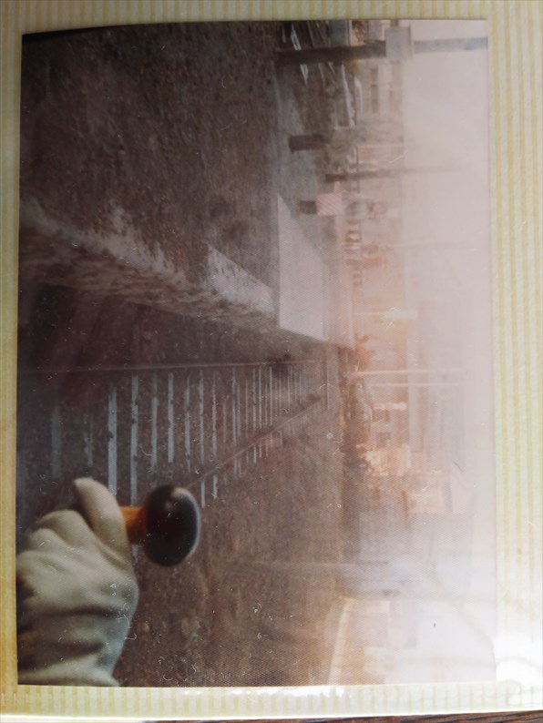
夕方、宝塚線に乗ってて偶然走ってる姿に遭遇する
ととても嬉しかったのを覚えています。
昭和５６年１２月１４日（月）
廃止直前になってようやく乗りに行けました。
記憶では小６の時と思ってましたが、中１ですね。
平日なんで、学校行く前に行ってますね。
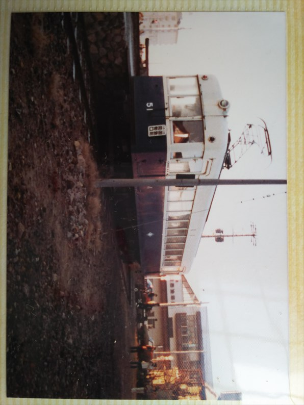
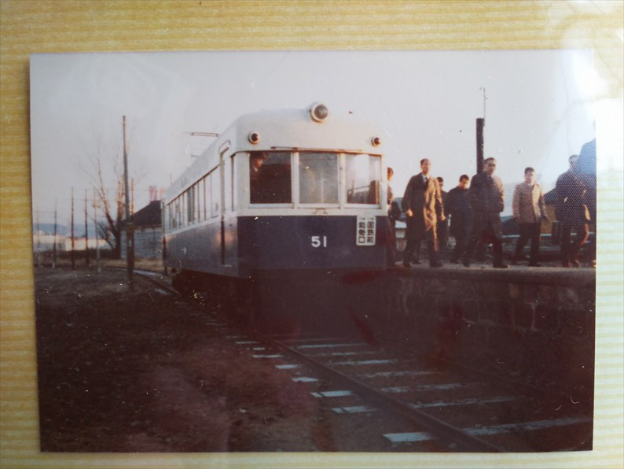
それなりに通勤客も乗ってますね。
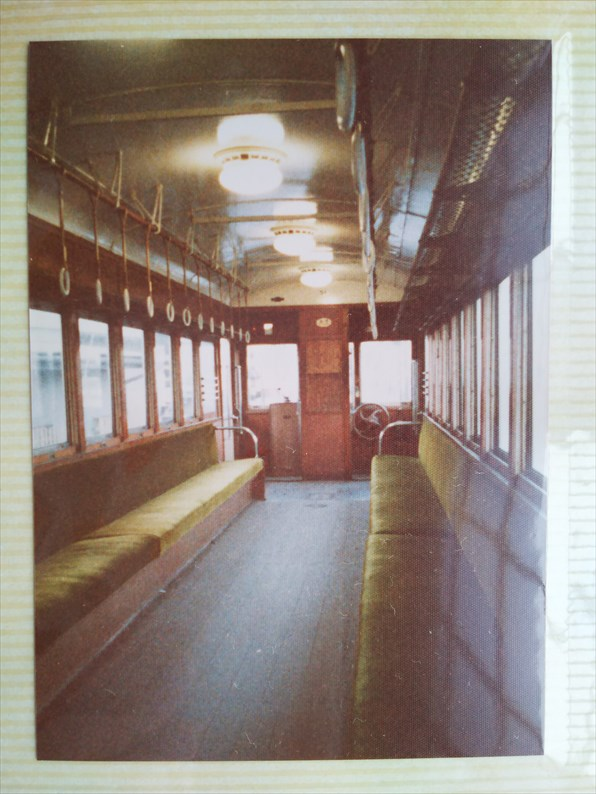
昔はこの車両が本線を走ってたなんて、当時は想像もできませんでし
た。
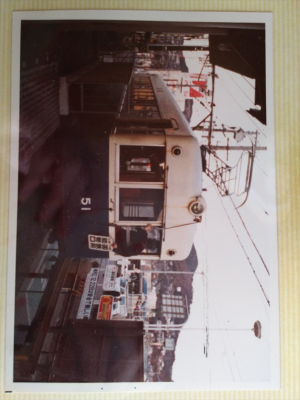
後ろの西友は、まだ盛業中っすね。
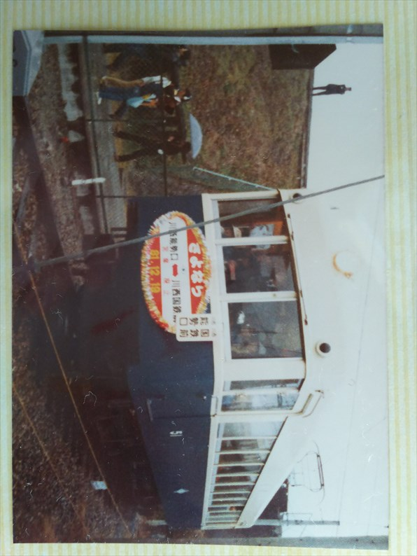
昭和５６年１２月１９日（土）
さよなら運転の日は雨やったんよね～。ピストン運
転の大サービスでした。
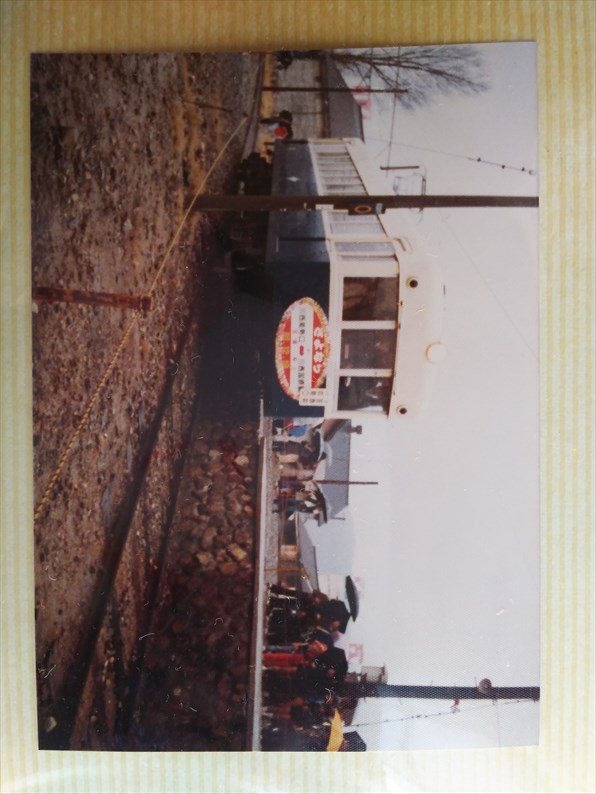
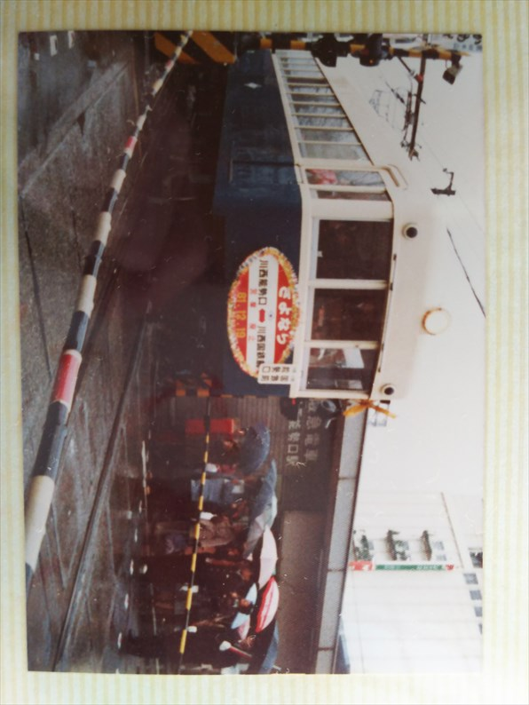
こんな近くでサヨナラ運転してるのに、なんで夜も
行かへんかったんやろ。
なんか用事があって、後ろ髪ひかれながら帰ったよ
うな気もする。
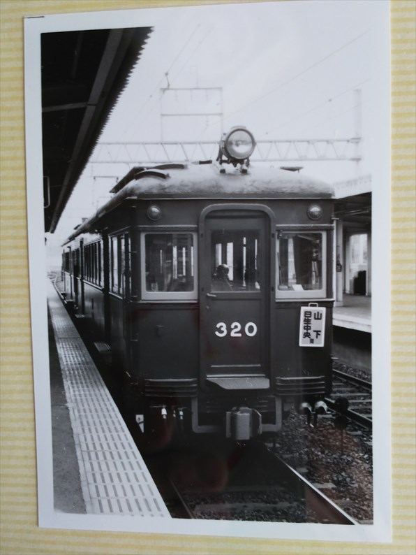
昭和５９年４月３０日
高校の時のＧＷに訪問しました。
山下駅。
カラーで撮っとけば・・・
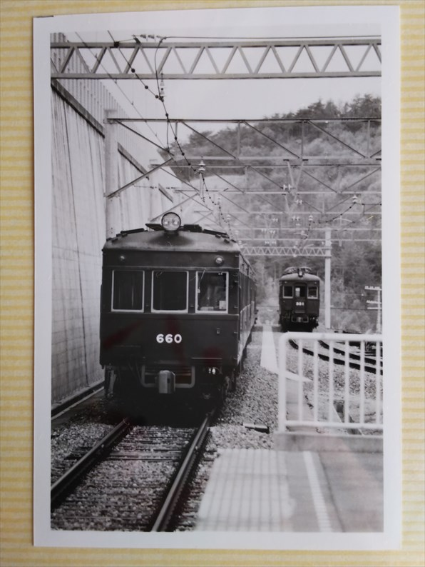
日生中央に移動。
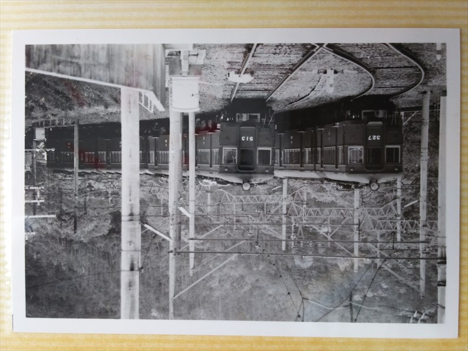
右は５１０系ですね。５１０系はこの写真だけやな。
より古い３２０系に目が行ってたと思います。
３２０と５１０の関係は、キハ４０と４７の関係で
すね。
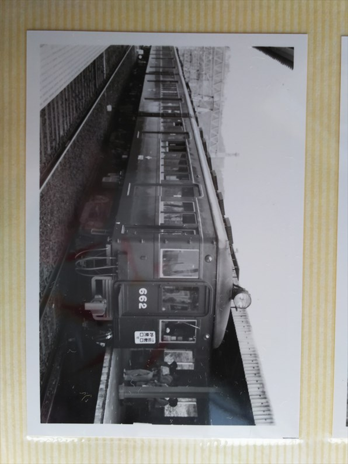
山下に戻ってきました。
当時の主力は６１０系ですね。
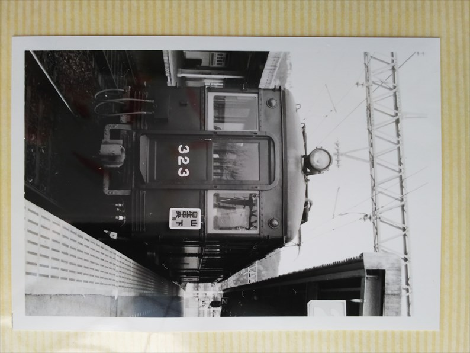
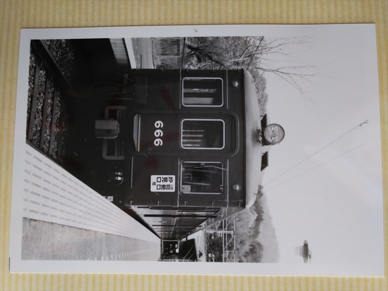
妙見口駅。変わらんなぁ。
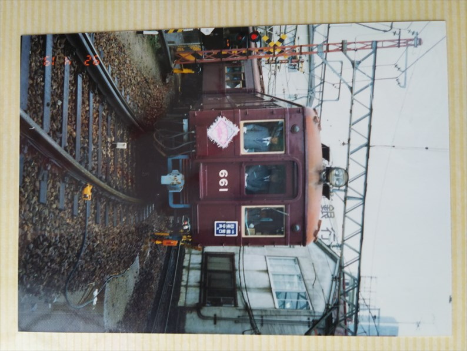
平成４年４月１９日（日）
そしてこれ、全く記憶から消えてますが、６１０系のサヨナラ運転、行
ってたんや。自分で驚いてます。
それも、ＳＥになってるときやし。
高架前の川西能勢口駅にて
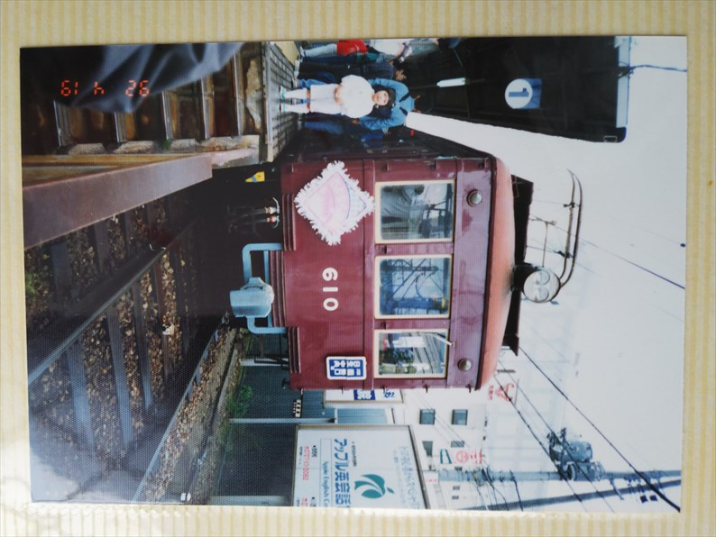
岩佐模型さん、鉄コレは入手済なので、Ｎ化よろしくお願い致し
ます！